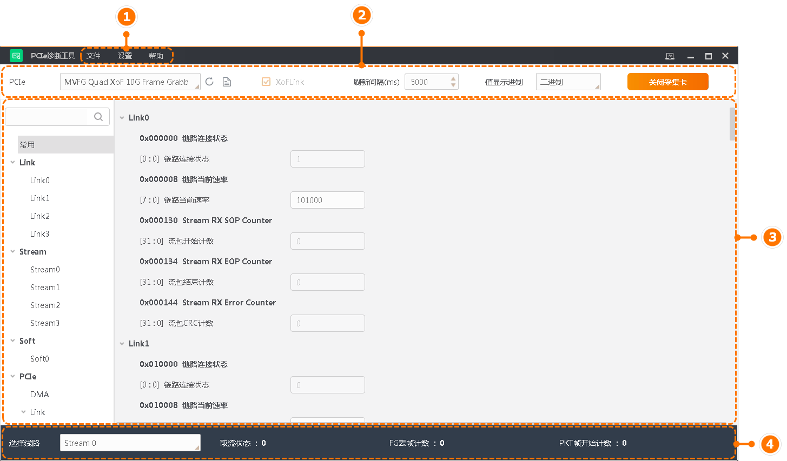

工具介绍
PCIe诊断工具（本手册简称为“工具”）可对采集卡调试状态信息的内存值进行实时读取。
工具支持的采集卡类型请见下表：
|
采集卡类型 |
采集卡接口 |
|---|---|
|
图像采集卡 |
Camera Link采集卡、CoaXPress采集卡、GigE采集卡、10 GigE采集卡（部分型号支持）、XoFLink光口采集卡 |

图 1 主界面|
序号 |
区域 |
说明 |
|---|---|---|
|
1 |
菜单栏 |
菜单栏可提供数据文件进行导入/导出和帮助操作。
|
|
2 |
采集卡设置 |
通过采集卡设置区域，可选择相应采集卡并进行实时采集，可对如下相关内容进行设置：
|
|
3 |
诊断监视 |
通过诊断监视区域可对采集卡PCIe调试状态信息的内存值进行实时监视，具体请见诊断监视章节。 |
|
4 |
线路状态监测 |
可对采集卡的线路状态、图像行高等进行实时监测。 通过在选择线路处选择Stream *，可对该线路的取流状态、FG丢帧计数、 PKT帧开始/结束计数的值进行实时查看。
说明
采集卡接口类型不同，显示的界面有所差别，请以实际显示为准。 |
 ：查看采集卡信息；
：查看采集卡信息； ：查看内存和CPU利用率；
：查看内存和CPU利用率；